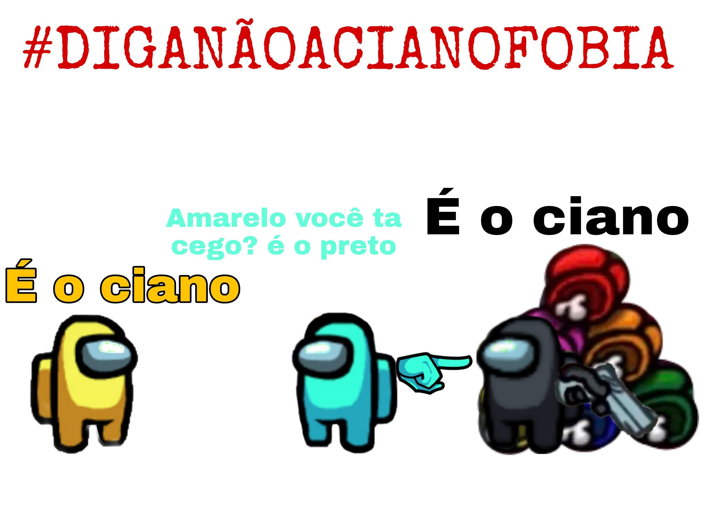

Cianofobia
Eles sofrem. E muito.
Estimativas apontam que 7 a cada 10 cianos são acusados injustamente apenas pela sua cor.
Diga não à cianofobia.

Há diversos relatos de jogadores tratando o tema de maneira irresponsável e fazendo piadas sobre o assunto.

Por isso, reforçamos:

#TodosSomosCianos